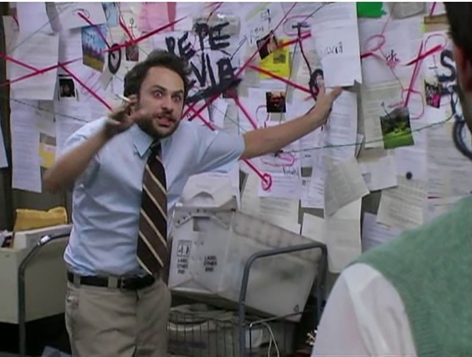

Charlie Kelly
The wild card
- Played by
- Charlie Day
- Job at Paddy's
- Janitor (doing "Charlie work")
Charlie can barely read, sleeps in a room with Frank, and is obsessed with the Waitress, who wants nothing to do with him. He's the heart of the gang and is often the most creative, writing a whole musical and claiming to be an expert in "bird law."
Charlie Day is also known for Horrible Bosses, Pacific Rim and voicing Luigi in The Super Mario Bros. Movie.